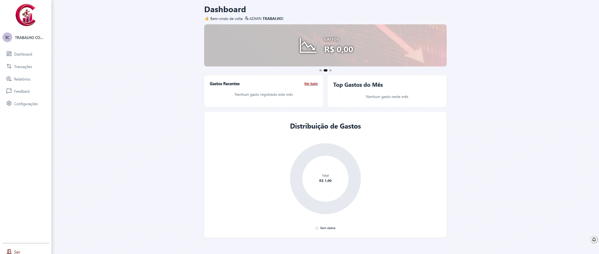
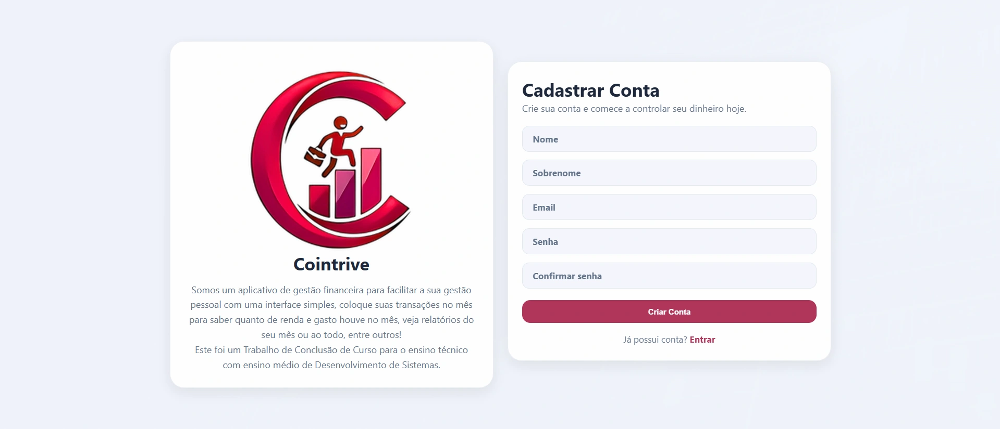
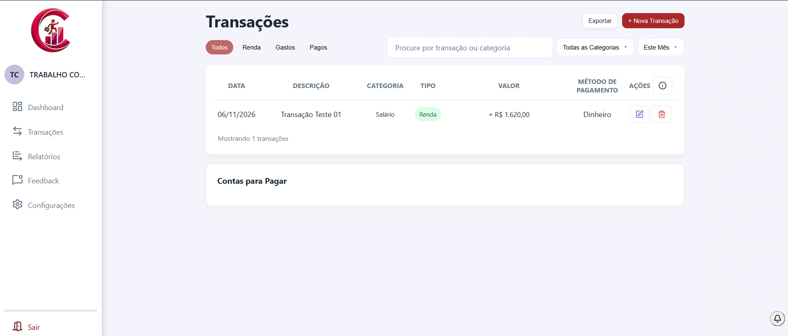
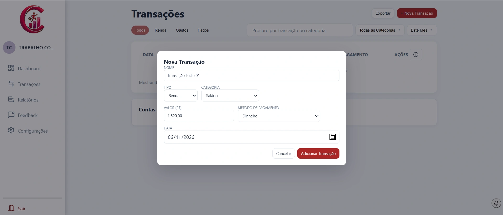
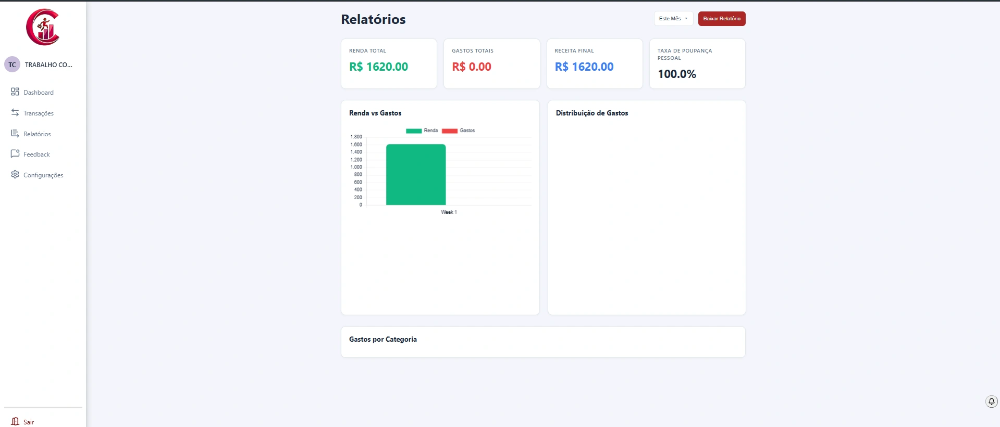
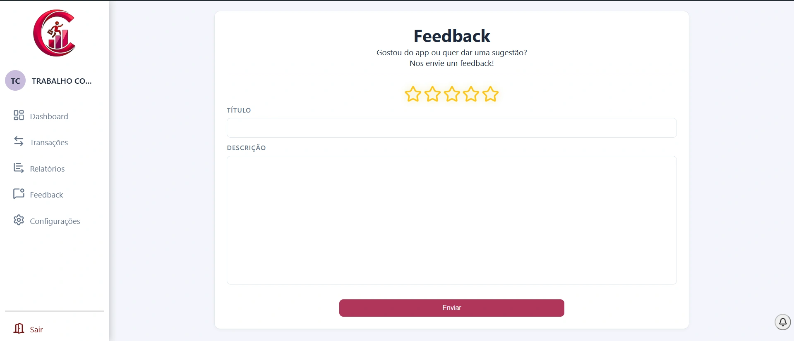
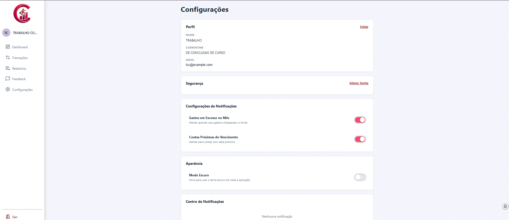
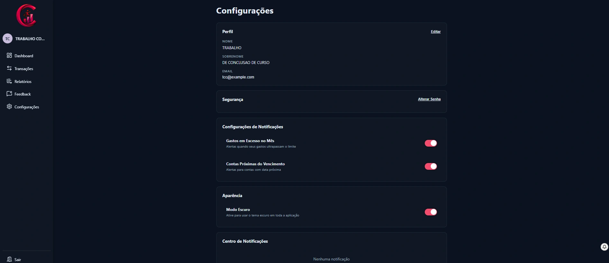
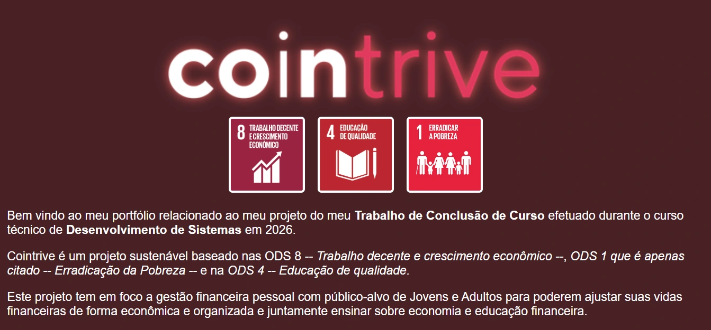

Sobre mim.
Tenho 17 anos e estou no terceiro ano do Ensino Médio e do curso técnico em Desenvolvimento de Sistemas. Gosto de experimentar diferentes áreas da tecnologia. Atualmente, estou pesquisando robótica com Arduino e, depois do curso, pretendo cursar Engenharia da Computação.
Como líder do Cointrive, planejei e executei o TCC junto com a equipe. Acompanhei as dificuldades de cada integrante e participei da modelagem do sistema, do desenvolvimento do site e da documentação.
Matérias.
As atividades que desenvolvi no curso, organizadas por disciplina e semana.


Cointrive.
Gestão financeira pessoal
Criamos o Cointrive para ajudar jovens e adultos a entender quanto recebem, quanto gastam e como as despesas se distribuem ao longo do mês.
O site permite registrar transações, consultar relatórios e acompanhar contas a pagar. O projeto relaciona educação financeira aos ODS 4 e 8 e menciona o ODS 1.
Repositório do TCC ↗

Galeria do projeto9 imagens















